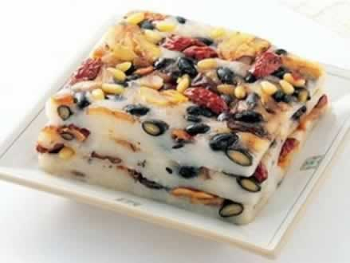
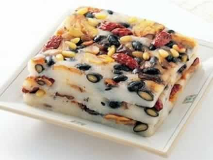

孕妇慎食方便食品
许多准妈妈在怀孕期间偶尔都会“向往”方便面，一来简便省事，免去做饭炒菜的麻烦；二来看到各种方便面所谓的营养广告，还会认为加工的方便食品其实营养也很丰富。其实不然，方便面虽然方便，但对准妈妈来说，实在是没有营养的食物。
方便面的主要成分是碳水化合物、味精、食盐和调味品，其中调味品可能有牛肉汁、鸡肉汁、虾汁等，在这些汤汁里，牛肉、鸡肉与虾肉的含量其实是非常少的，蔬菜更少，有的只有一些菜末或菜汁而已，完全不具备孕期准妈妈所需要的蛋白质、脂肪与矿物质维生素等方方面面的营养所需。
因此，准妈妈不宜多吃方便面，否则对母体与胎宝宝发育均不利。贪食方便面的女性，在孕期一定要改掉这个爱好与习惯，以免造成宝宝营养不良甚至发育缺陷。
本周推荐尝试食谱1：
鸡脯扒小白菜推荐理由：本菜品含有丰富的蛋白质、钙、磷、铁、胡萝卜素，有利于胎儿生长发育。
食谱原料：
小白菜1000克，熟鸡脯半个，花生油50克，盐4克，料酒10克，牛奶50克，水淀粉15克，葱花5克，鸡汤适量。
制作方法：
1、将小白菜去根，洗净，每棵分成4瓣，切成10厘米长的段（注意让菜心相连，不能散乱），用开水焯透，捞出用凉水过凉，理齐放入盘内，沥去水分。注意用开水焯小白菜时不要焯得太烂，应该在开水中转两圈立即捞出。
2、炒锅上火，放入花生油烧热，下葱花炝锅，烹料酒，加入鸡汤和盐，放入鸡脯和小白菜（顺着放），用旺火烧开，加入牛奶，用水淀粉勾芡，盛入盘内即成。
本周推荐尝试食谱2：
晶糕肉片

晶糕肉片

推荐理由：本菜品含有人体必需的优质蛋白质、脂肪、碳水化合物、维生素A、D及多种矿物质。
食谱原料：
熟猪肉100克，山楂糕80克，鸡蛋1个，淀粉30克，面粉20克，花生油、白糖、盐各适量。
制作方法：
1、将熟猪肉切成4厘米长，2厘米宽，0.8厘米厚的片。
2、将鸡蛋磕入大碗中，放入淀粉、面粉，加一点水搅成稠糊，再将切好的肉片放入，搅拌均匀。
3、将山楂糕放入碗内压成泥，倒入白糖，加适量水调成汁。
4、锅置火上，烧热后倒入花生油，烧至七成热时，逐片下入肉片，炸成浅黄色，捞出控净油。注意不能用旺火，以免炸老、发硬。
将锅内的油倒出，把调好的晶糕汁倒入锅内，待烧开后，下入肉片及少量精盐，翻炒均匀，盛入盘中即成。